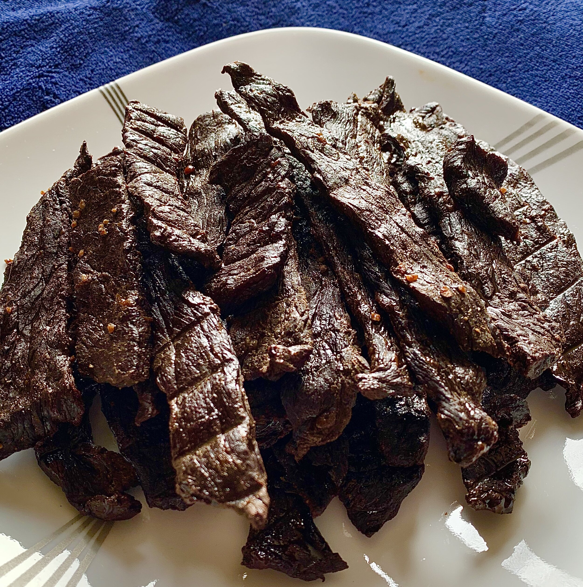

HOME
Beef Jerky

Description
Beef jerky is lean, trimmed beef that has been cut into strips and dried.
Drying (or dehydrating) meat with heat and salt slows bacterial growth dramatically,
stretching its lifespan by many months.
The word "jerky" comes from a Quechua word: "Ch'arki," which literally means
"dry, salted meat."
Ingredients
Marinade
- ¼ cup low-sodium soy sauce
- 2 tablespoons Worcestershire sauce
- 2 tablespoons liquid smoke
- 2 tablespoons brown sugar
- 2 teaspoons salt
- 1 teaspoon ground black pepper
- 1 teaspoon meat tenderizer
- 1 teaspoon garlic powder
- 1 teaspoon onion powder
- 1 teaspoon ground paprika
Beef Jerky
- 2 pounds beef round steak, cut into thin strips
Directions
- Gather all ingredients
- Prepare the marinade: Combine soy sauce, Worcestershire sauce, liquid smoke,
brown sugar, salt, pepper, meat tenderizer, garlic powder, onion powder,
and paprika in a glass bowl
- Place beef strips in a 9x13-inch glass baking dish.
Pour marinade over top; toss until evenly coated.
Cover and marinate in the refrigerator for 8 hours or overnight.
- Remove beef strips from the bowl and place between two pieces of plastic wrap;
pound to 1/8-inch thickness
- Arrange pounded beef strips in a single layer on the trays of a dehydrator.
Dry at the dehydrator's highest setting until jerky is done to your liking,
at least 4 hours